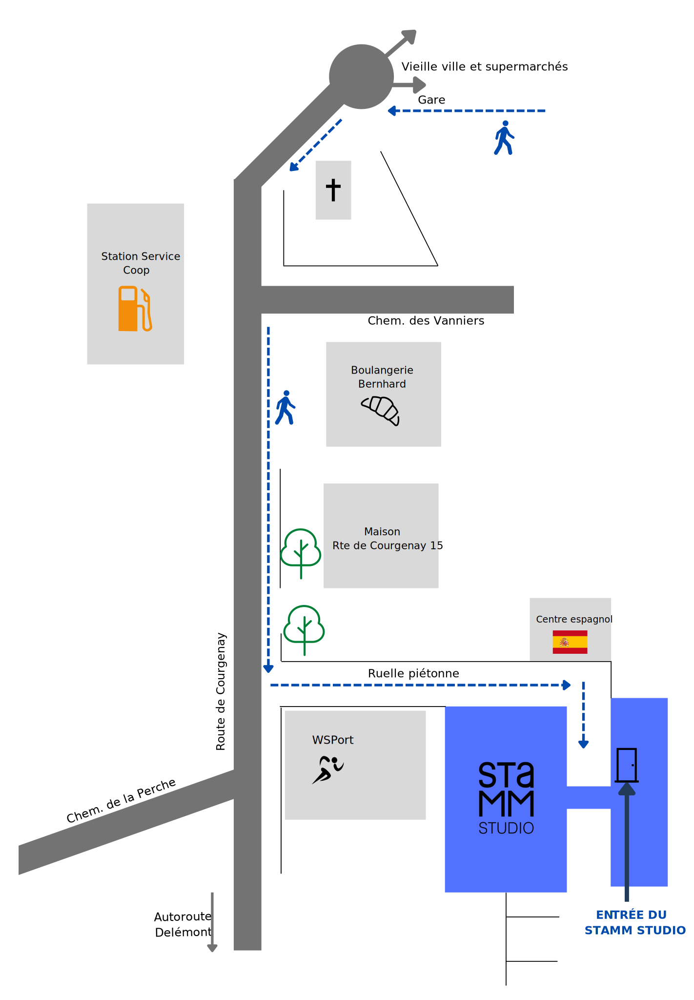
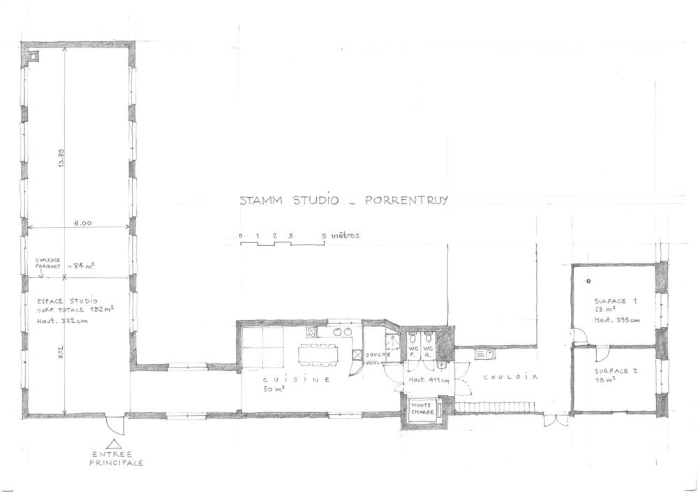
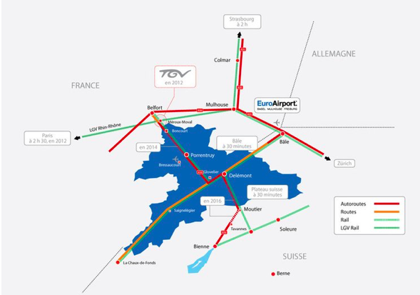

Pratique
Fiche Technique
 Télécharger fiche techniqueSituation
Le Stamm Studio se situe à Porrentruy, petite ville jurassienne entourée d’une campagne apaisante. Porrentruy est bien desservi par les CFF (trains et bus), et le Stamm est à 7 minutes à pied de la gare.

Réseau autour du Stamm Studio:
- Belfort
- Théâtre du Jura, Délémont: 20 min voiture / 35 min de train
- Filature de Mulhouse: 1h voiture
- Basel SBB: 1h10, liasion de train directe
- Bienne: 1h, liaison de train directe
- Gare Gelfor-Montebéliard TGV: 30 min voiture / 30 min et train
